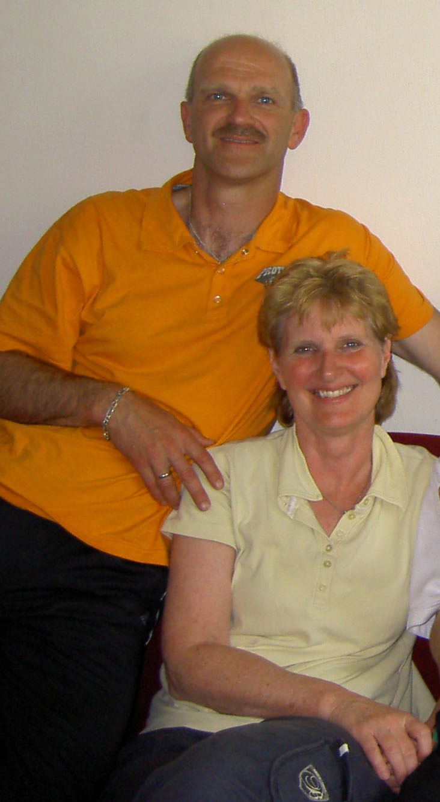

<!--Wie zijn wij?-->
<div class="container-fluid">
    <div class="row">
        <div class="col-md-12">
            <h2>Wie zijn wij?</h2>

            <div class="row">
                <div class="col-md-4">       
                    
                </div>
                <div class="col-md-8">
                     <p>
                        Wie zijn wij: Wij zijn Han en Anneke Waardenburg en wonen in Oud-Alblas, een mooi dorpje
                        in de Alblasserwaard. Han is in het dagelijks leven docent Lichamelijke opvoeding en Anneke
                        werkt als zorgco&ouml;rdinator op een school voor voortgezet onderwijs.
                    </p>
                </div>
            </div>

            <div class="row">
                <div class="col-md-12">
                    <p>
                        Wij ervaren het als onze
                        roeping om mensen te onderwijzen vanuit Gods Woord, de Bijbel. Wij hopen daarmee bij te dragen
                        aan de geestelijke groei van mensen als christen en hen te helpen Gods Woord in de praktijk van
                        het dagelijkse leven toe te passen. 
                    </p>
                </div>
            </div>
        </div>
    </div>
</div> 